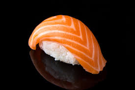

Bem vindo ao restaurante japonês SaBÔR Japão, onde você pode desfrutar da autêntica culinária japonesa
Sushi variado
Sashimi
Temaki
Yakissoba
Missoshiro

Sushi: Uma Delícia Japonesa Sushi é uma das iguarias mais conhecidas e apreciadas da culinária japonesa. Com suas origens nas antigas técnicas de conservação de peixe no sudeste asiático, o sushi evoluiu ao longo dos séculos para se tornar uma arte culinária refinada e admirada em todo o mundo. Tradicionalmente, consiste em arroz temperado com vinagre, combinado com uma variedade de ingredientes frescos, como peixe cru, frutos do mar, vegetais e até mesmo opções doces. Além de seu sabor delicado e equilibrado, o sushi também se destaca pela sua apresentação estética, que reflete a simplicidade e a harmonia características da cultura japonesa. Existem diversos tipos de sushi, como o nigiri (arroz moldado com fatias de peixe por cima), sashimi (fatias finas de peixe cru, sem arroz), maki (rolinhos de arroz e recheio envoltos em alga) e temaki (cones de alga recheados com arroz e ingredientes). Hoje, o sushi é apreciado em todo o mundo, sendo uma opção saudável, leve e sofisticada, ideal para diferentes ocasiões, desde refeições rápidas até experiências gastronômicas mais elaboradas.
| Dia da Semana | Horário |
|---|---|
| Segunda-feira à Quinta-feira | 18:00 - 22:00 |
| Sexta-feira à Sábado | 18:00 - 23:00 |
| Domingo | Fechado |